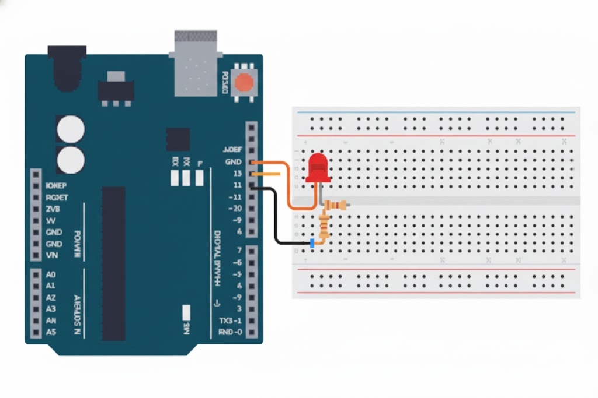

Learn the professional way to handle timing! Using millis() instead of delay() lets your Arduino do multiple things at once. This is a critical skill for building responsive projects.
1. Concept and Description
In this project, we will explore the following concepts:
Why delay() is problematic for complex projects
Using millis() for non-blocking timing
The "blink without delay" pattern
Tracking time with unsigned long variables
2. Components Needed
(1) Arduino Uno
(1) LED
(1) 220Ω Resistor
(1) Breadboard
(2) Jumper Wires
3. Physical Montage (Wiring Instructions)

Pin Connections:
Arduino Pin
Component
Pin 13
LED anode (+) via 220Ω resistor
GND
LED cathode (-)
4. The Code (Arduino Sketch)
Copy and paste the code below into your Arduino IDE.
/*
* Project #4: Non-Blocking Blink with millis()
* The Arduino Student Lab
*
* Blinks an LED WITHOUT using delay()
* This allows other code to run simultaneously
*/// ============================================// PIN DEFINITIONS// ============================================constint LED_PIN = 13;
// ============================================// TIMING CONFIGURATION// ============================================constunsignedlong BLINK_INTERVAL = 1000; // Blink every 1000ms (1 second)// ============================================// STATE VARIABLES// ============================================unsignedlong previousMillis = 0; // Stores last time LED was updatedint ledState = LOW; // Current state of LED// ============================================// SETUP - Runs once at startup// ============================================void setup() {
pinMode(LED_PIN, OUTPUT);
// Optional: Start Serial for debuggingSerial.begin(9600);
Serial.println("Non-blocking blink started!");
}
// ============================================// MAIN LOOP - Runs repeatedly// ============================================void loop() {
// Get current timeunsignedlong currentMillis = millis();
// Check if enough time has passedif (currentMillis - previousMillis >= BLINK_INTERVAL) {
// Save the current time for next comparison
previousMillis = currentMillis;
// Toggle the LED stateif (ledState == LOW) {
ledState = HIGH;
} else {
ledState = LOW;
}
// Apply the new state to the LEDdigitalWrite(LED_PIN, ledState);
// Debug outputSerial.print("LED is now: ");
Serial.println(ledState == HIGH ? "ON" : "OFF");
}
// ==========================================// OTHER CODE CAN RUN HERE!// ==========================================// Unlike delay(), the loop keeps running// so you can check buttons, read sensors, etc.// This is where millis() shines!// Example: You could add button checking here// checkButtons();// Example: You could read a sensor here// readSensors();
}
/*
* WHY IS THIS BETTER THAN delay()?
*
* With delay(1000):
* - Arduino is FROZEN for 1 second
* - Cannot respond to button presses
* - Cannot update displays
* - Cannot check sensors
*
* With millis():
* - Loop runs thousands of times per second
* - Arduino stays responsive
* - Can do multiple tasks "simultaneously"
* - Professional embedded programming technique
*/
5. Explanation & Challenges
🔍 How It Works
millis(): Returns milliseconds since Arduino started (resets after ~50 days).
Time Comparison: We check if currentMillis - previousMillis >= INTERVAL.
Update Timestamp: When we toggle the LED, we save the current time.
No Blocking: The loop runs continuously, only acting when enough time has passed.
unsigned long: This data type can hold values up to ~4.3 billion (needed for millis).
⚠️ Important: Always use unsigned long for millis() timing variables. Using int will cause overflow errors after just 32 seconds!
🚀 Challenges
Two LEDs, Two Rates: Blink one LED every 500ms and another every 1200ms (impossible with delay!).
Responsive Button: Add a button that instantly changes blink speed when pressed.
Morse Code: Use millis() to create proper dot/dash timing for SOS.
Heartbeat: Create a double-blink pattern like a heartbeat pulse.